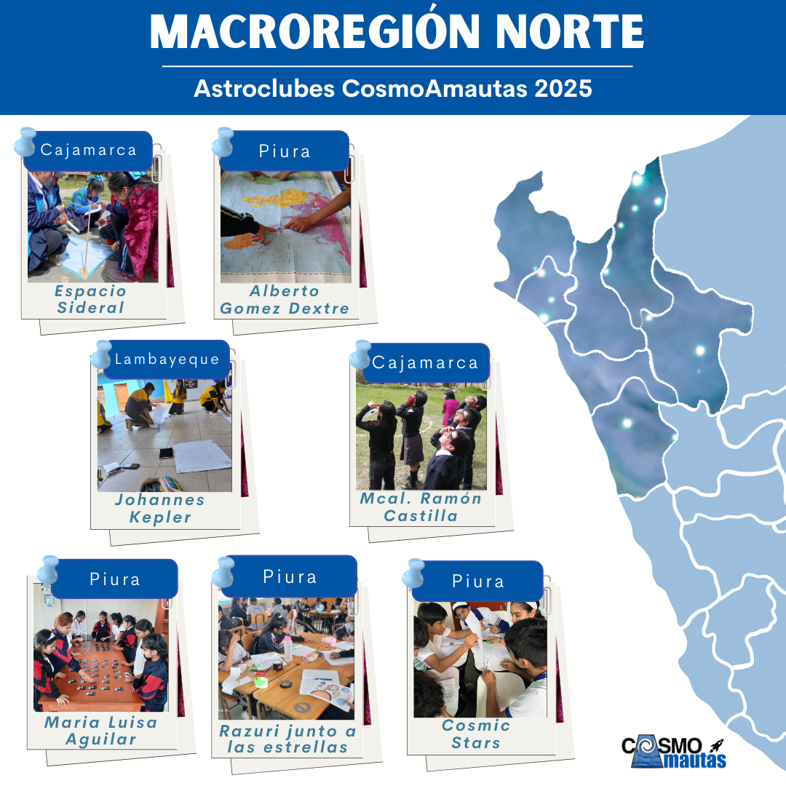
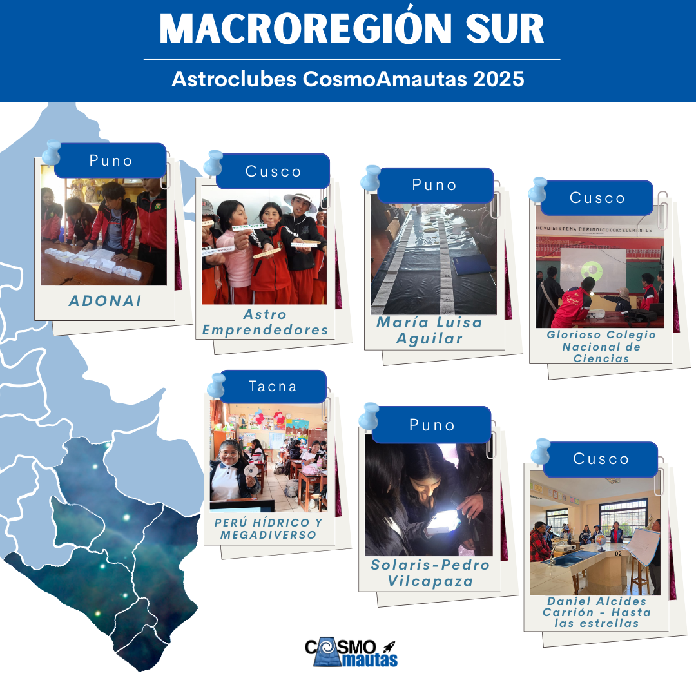
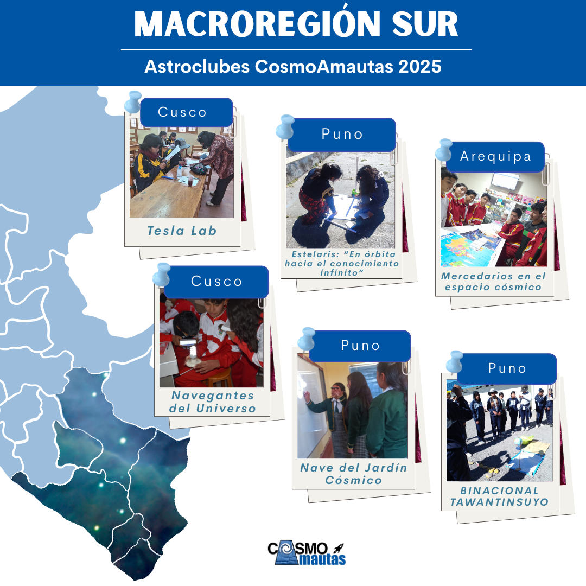
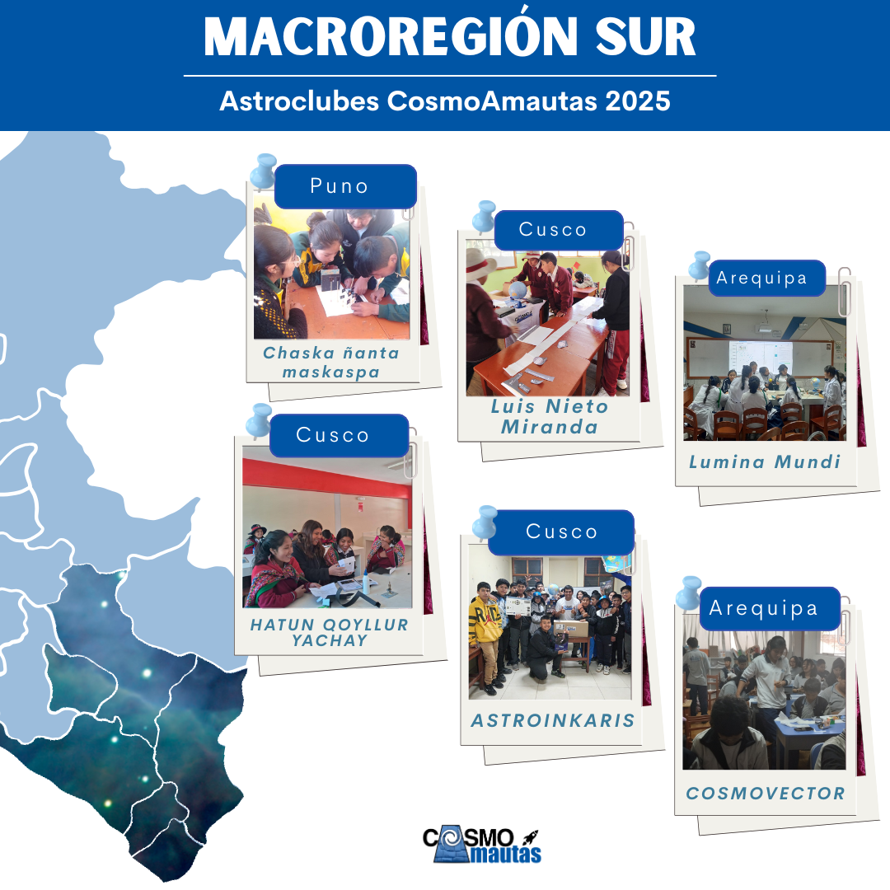
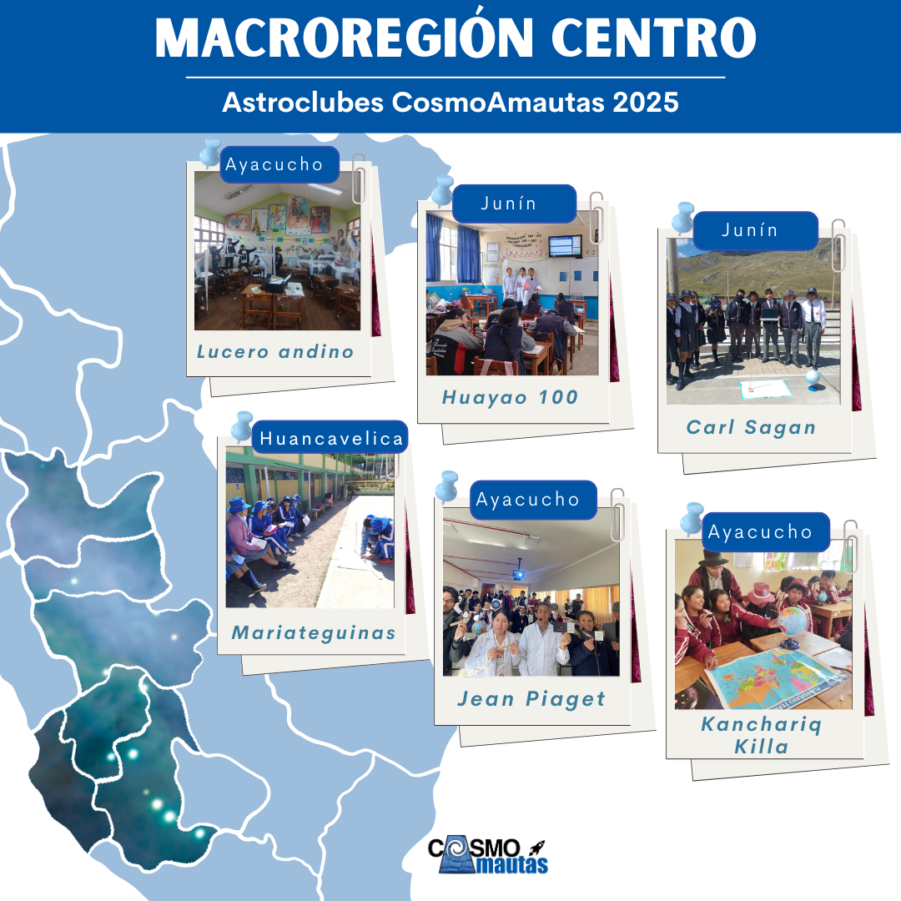
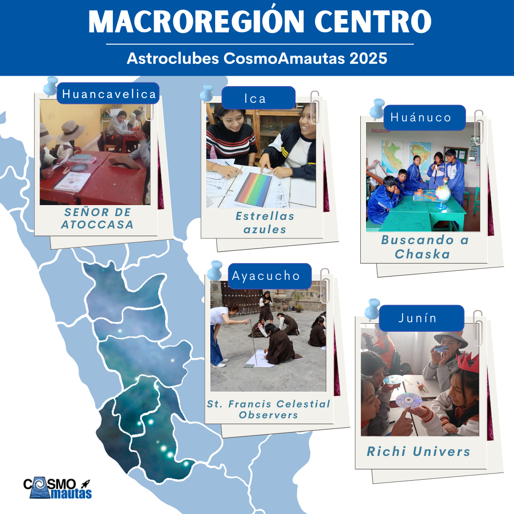
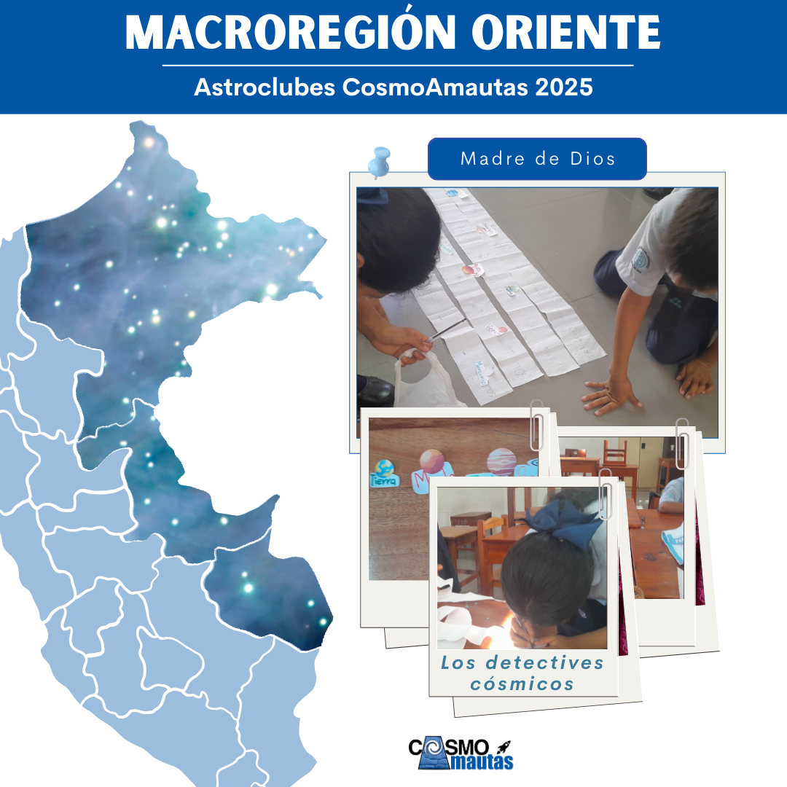
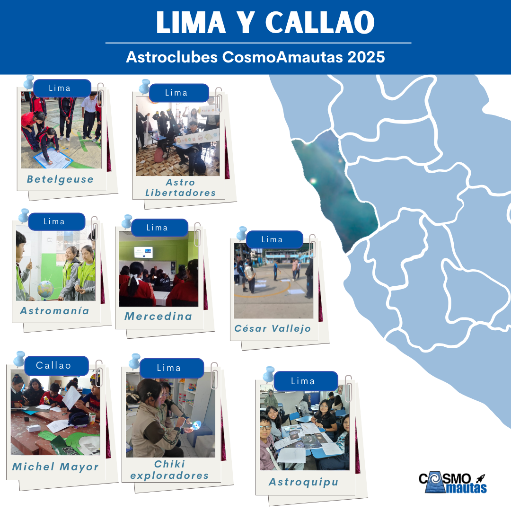
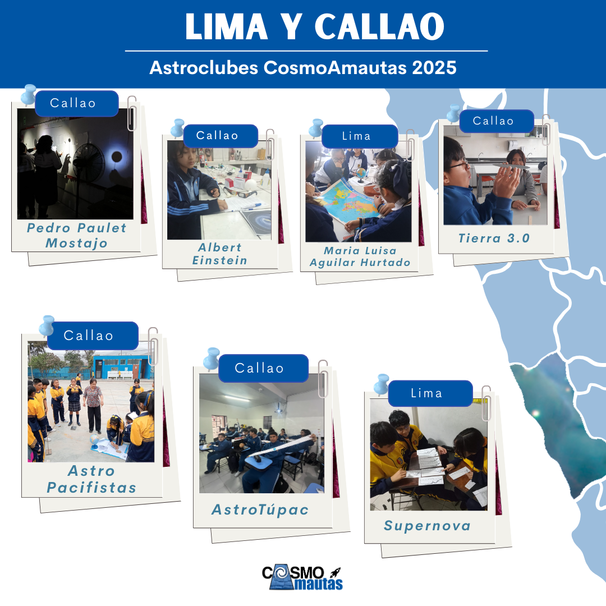

En ediciones anteriores, docentes de distintas regiones del Perú transformaron sus aulas y comunidades creando AstroClubes.
Desde zonas rurales hasta ciudades, estos clubes se convirtieron en espacios donde niñas y niños observan el cielo con telescopios,
construyen modelos del sistema solar, aprenden a leer mapas estelares y debaten sobre los misterios del universo.
Muchos docentes, que empezaron sin experiencia previa en astronomía, hoy son líderes locales en educación científica
y agentes de cambio en sus colegios. Sus estudiantes participan en ferias, comparten sus proyectos con otras escuelas
y se motivan a seguir carreras en ciencia y tecnología.
🌟 Tú puedes ser el próximo o la próxima docente en transformar la curiosidad de tus estudiantes en pasión por el conocimiento.
Con el acompañamiento de CosmoAmautas, ¡tu AstroClub también puede marcar la diferencia!
¿Qué son los AstroClubes CosmoAmautas?
Son espacios extracurriculares creados y liderados por docentes egresados del taller,
donde estudiantes curiosos
aprenden haciendo, experimentan y aplican el método científico de manera activa y colaborativa.
Además de fortalecer la educación científica, los AstroClubes tienen un enfoque inclusivo y buscan
inspirar especialmente a niñas y mujeres, aumentando su confianza en sus capacidades científicas
y mostrándoles que las carreras científicas también son para ellas.
Según reportes de docentes desde 2021, los AstroClubes se caracterizan por:
🌟 Grupos de entre 8 y 20 estudiantes inscritos.
🌟 Reuniones quincenales o mensuales de aproximadamente 2 horas, por las tardes.
🌟 Clubes activos por más de un año; algunos superan los tres años.
🌟 Espacios variados: laboratorios, aulas y áreas abiertas.
🌟 Actividades que incluyen indagación científica, observaciones astronómicas,
construcción de modelos, uso de simuladores, charlas, debates y participación en ferias.
Actividades destacadas:
✨ Observación de eclipses.
✨ El experimento de Eratóstenes en colaboración con otros AstroClubes.
✨ Pasacalles y desfiles para promover la astronomía en la comunidad.
✨ Ferias de ciencia y observación nocturna con telescopios.
Los docentes coinciden: sus estudiantes se muestran muy entusiasmados e interesados, y
demuestran un creciente interés por la ciencia.
Nuestros AstroClubes 2025:










Nuestros AstroClubes 2022: